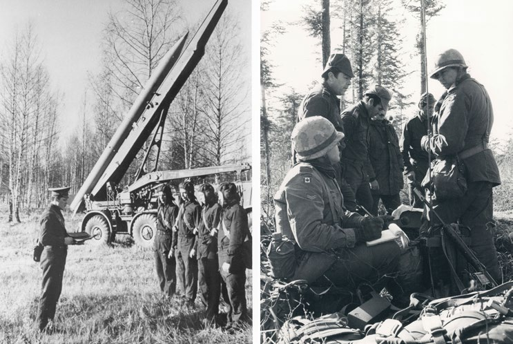
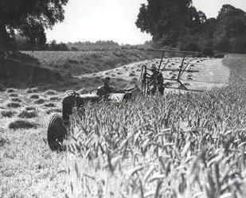
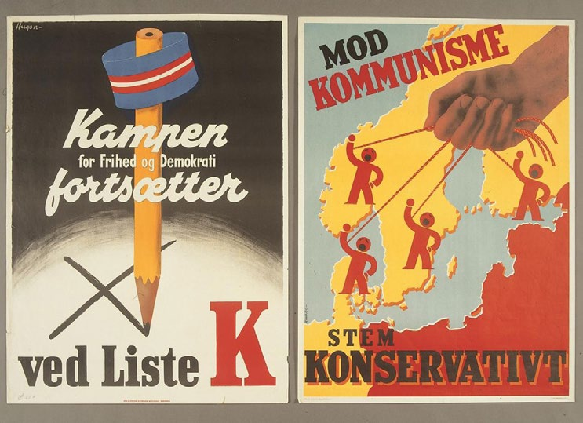
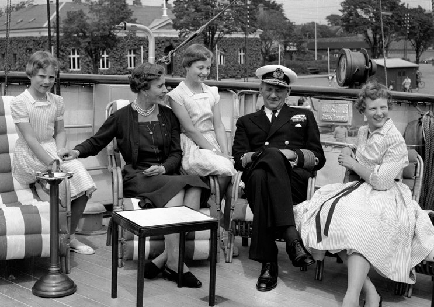
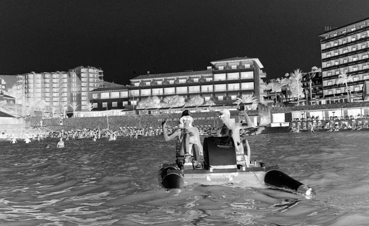
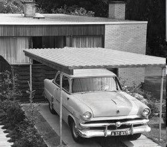
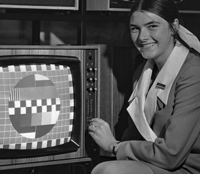
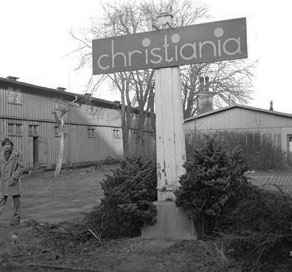
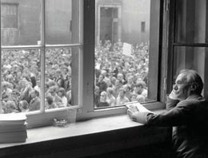
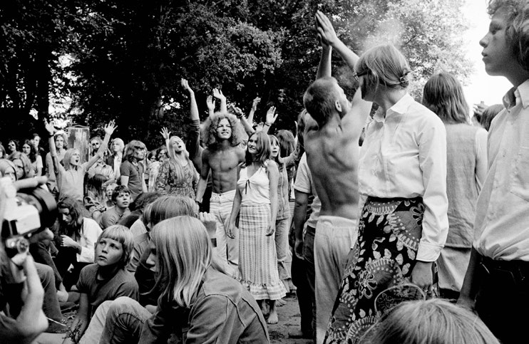

1.11 – KOLD KRIG, VELFÆRD OG UNGDOMSOPRØR (1945-72)
sidde 43
Ungdomsoprør (1945-72)
Danmark ændrede sig meget i tiden efter 2. Verdenskrig. Danmark opgav sin traditionelle neutralitetspolitik og blev medlem af NATO i 1949. Også indenrigspolitisk bød efterkrigstiden på store forandringer, ikke mindst på grund af den hastigt voksende økonomiske velstand. Danskerne fik flere penge mellem hænderne end nogensinde før. Mod slutningen af 1960’erne voksede uenighederne mellem yngre og ældre generationer, fordi flere unge satte spørgsmålstegn ved mange af samfundets traditionelle normer.
DANSK POLITIK OG DEN KOLDE KRIG
Verden var blevet en anden efter 2. Verdenskrig. Millioner af mennesker var blevet dræbt under krigen, og mange byer i Europa lå i ruiner. Krigen havde skabt et stærkt ønske om at sikre international fred og sikkerhed. I 1945 stiftede en række lande derfor De Forenede Nationer (FN). Danmark var fra begyndelsen med i FN, der blandt andet skulle være med til at forhindre en ny verdenskrig.
Efter 2. Verdenskrig opstod Den Kolde Krig mellem de to nye supermagter, USA og Sovjetunionen. Den var en ideologisk kamp og et våbenkapløb om blandt andet atomvåben mellem de vestlige demokratier baseret på liberal markedsøkonomi på den ene side – og de kommunistiske lande baseret på planøkonomi på den anden side. Europa blev delt i et vest og et øst langs en linje, som især afspej lede, hvilke områder der i 2. Verdenskrig var blevet befriet fra Nazi-Tyskland af henholdsvis USA og Storbritannien i vest og af Sovjetunionen i øst.
Opdelingen mellem øst og vest blev kendt som Jerntæppet. Den Kolde Krig kom til at præge verden frem til, at de kommunistiske diktaturer i Østeuropa faldt omkring 1990.
Danmark havde søgt at holde sig neutral i internationale konflikter siden Englandskri gene i begyndelsen af 1800-tallet. Men da neutralitetspolitikken ikke kunne forhindre den tyske besættelse under 2. Verdenskrig, valgte Danmark side i Den Kolde Krig. Man følte sig bedre beskyttet som medlem af forsvarsalliancen NATO (Den Nordatlantiske Traktatorganisation). I 1949 blev Danmark derfor medlem af NATO. Alliancen bestod af USA, Canada, Tyrkiet og en række vesteuropæiske lande. Centralt i NATO-traktaten er artikel 5 – den såkaldte ”musketer-ed”. Den siger, at et væbnet angreb mod et medlemsland skal betragtes som et angreb på alle medlemslandene. Dette forpligter de andre NATO-lande til – om nødvendigt også med militær magt – at hjælpe det land, som er blevet angrebet.
Læremateriale Til Indfødsretsprøven
sidde 44
Sovjetiske tropper på øvelse i Polen og canadiske tropper i Vest-Tyskland under Den Kolde Krig.
Sovjetiske tropper på øvelse i Polen og canadiske tropper i Vest-Tyskland under Den Kolde Krig.
Over for NATO stod Warszawa-pagten, der blev stiftet i 1955. Denne forsvars alliance var ledet af det kommunistiske Sovjetunionen, som fik stor indfly delse på landene i Østeuropa efter 2. Verdenskrig. Efter næsten 100 år under Tysklands indflydelse orienterede Danmarks udenrigs- og sikkerhedspolitik efter 2. Verdenskrig sig særligt mod USA.
USA spillede en vigtig rolle i genopbygningen af Vesteuropa efter 2. Verdens krig. I årene 1948-51 gav USA meget store pengebeløb til flere vesteuropæiske lande, blandt andet Danmark. Pengene blev givet som en del af Marshall-planen, opkaldt efter den amerikanske udenrigsminister George Marshall. Formålet med Marshall-hjælpen var at få sat gang i den internationale samhandel, som var gået i stå under 2. Verdenskrig. Dermed håbede man også at kunne hindre kommunismens videre udbredelse i Vesteuropa.
Den økonomiske hjælp fra USA var med til at modernisere det danske landbrug i de første årtier efter 2. Verdenskrig. Hundred-tusinder af heste blev afløst af traktorer, meje tærskere og andre maskiner. En stor del af arbejdskraften på landet blev derfor overflødig, og mange folk flyttede fra landområderne ind til byerne i 1950’erne.Traktor på dansk landbrug i 1950'erne.
Traktor på dansk landbrug i 1950'erne.
Læremateriale Til Indfødsretsprøven


sidde 45
Det første valg efter krigen i 1945 resulterede i en borgerlig regering under Venstres ledelse, men i 1947 genvandt Socialdemokratiet regeringsmagten. Danmarks Kommunistiske Parti (DKP) fik med 12,5 procent af stemmerne forholdsvis stor tilslutning ved valget i 1945, fordi der i store dele af befolkningen var sympati for, at mange danske kommunister havde deltaget i modstands kampen under besættelsen og for Sovjetunionens betydelige indsats i nedkæm pelsen af Nazi-Tyskland. De fleste af partiets nye vælgere forlod dem dog hurtigt igen. Langt de fleste vælgere stemte fortsat på de fire gamle partier Social demokratiet, Det Radikale Venstre, Det Konservative Folkeparti og Venstre. Den danske tradition for politisk stabilitet og enighed om de grundlæggende demokratiske spilleregler fortsatte under Den Kolde Krig. De sovjetisk støttede kommunister fik aldrig del i regeringsmagten i Danmark.Valgplakater i 1945 fra Danmarks Kommunistiske Parti (med henvisning til kommunisternes indsats i
Valgplakater i 1945 fra Danmarks Kommunistiske Parti (med henvisning til kommunisternes indsats i modstandskampen under besættelsen) og Det Konservative Folkeparti (med advarsel om et sovjetisk angreb).
Læremateriale Til Indfødsretsprøven

sidde 46
I efterkrigstiden begyndte man igen at diskutere, om der var behov for at ændre grundloven. Ved en folkeafstemning i 1953 stemte et flertal for at ændre grund loven. Ændringen betød blandt andet, at Landstinget blev afskaffet. Der blev i stedet indført et såkaldt etkammersystem med Folketinget som eneste lovgi vende forsamling. Desuden kom grundloven nu også til at gælde for Grønland og ikke kun for Danmark og Færøerne. Tronfølgen blev også ændret, sådan at den danske trone kunne gå i arv til en kvinde. Sønner gik dog stadig forud for døtre, hvilket vil sige, at en yngre søn stadigvæk ville arve tronen, hvis han havde en ældre søster. Spørgsmålet om kvindelig tronfølge pressede sig særligt på, fordi den daværende konge Frederik 9. (1947-72) havde tre døtre og ingen sønner. Grundlovsændringen i 1953 muliggjorde dermed, at hans ældste datter, den senere dronning Margrethe 2. (1972-2024), kunne arve tronen. Med en ændring af tronfølgeloven i 2009 fik mænd og kvinder helt lige arveret til tronen, så det altid er den ældste – søn eller datter – der arver tronen.Kong Frederik 9. (f. 1899, reg. 1947-72), dronning Ingrid (1910-2000) med deres tre døtre Ann
Kong Frederik 9. (født 1899, reg. 1947-72), dronning Ingrid (1910-2000) med deres tre døtre Anne-Marie (født 1946), Benedikte (født 1944) og Margrethe (født 1940). Foto: Allan Moe/Ritzau Scanpix.
Det var Socialdemokratiet, der havde størst politisk indflydelse i de første årtier efter 2. Verdenskrig. Fra 1953 til 1968 blev alle regeringer i Danmark ledet af Socialdemokratiet. Det eneste parti, der opstod i denne periode, og som stadig er i Folketinget, er SF (Socialistisk Folkeparti). SF blev dannet i 1959 af en gruppe personer, der forlod DKP i protest mod de kommunistiske landes undertrykkelse af deres befolkninger, som udbryderne ikke mente, at DKP tog nok afstand fra. Nedkæmpelsen af den folkelige opstand mod det kommunistiske styre i Ungarn i 1956 havde afgørende betydning for splittelsen af DKP.
Læremateriale Til Indfødsretsprøven

sidde 47
STØRRE VELFÆRD
Fra slutningen af 1950’erne var der høj økonomisk vækst i Europa, herunder også i Danmark, som i perioden 1957-73 havde en økonomisk højkonjunktur nærmest uden sidestykke i landets historie. Der var fuld beskæftigelse og stor stigning i produktionen, ligesom de fleste indkomster voksede støt i denne periode. Perioden er derfor ofte blevet omtalt som ’De glade 60’ere’. Fra begyn delsen af 1960’erne eksporterede Danmark flere varer fra industrien end fra landbruget.Højkonjunkturen (cirka 1957-73) gav mange råd til nye forbrugsgoder.
Højkonjunkturen (cirka 1957-73) gav mange råd til nye forbrugsgoder.
Det var også i denne periode, at opbygningen af det danske velfærdssamfund for alvor begyndte, og et stadig større socialt sikkerhedsnet blev spændt ud under befolkningen. Flere af de ordninger, som ligger til grund for nutidens danske velfærdssamfund, blev etableret i de år, ligesom mange af de eksisterende ordninger blev udbygget betydeligt.
Læremateriale Til Indfødsretsprøven



sidde 48
Folkepensionen, der giver enhver borger ret til pension uanset indkomst, blev for eksempel indført i 1956. Og i 1964 vedtog Folketinget, at kommunerne skulle oprette det nødvendige antal daginstitutionspladser, således at alle familier kunne få mulighed for at få deres børn i vuggestue og børnehave. Udbygningen af velfærdsstaten medførte også, at skatter og afgifter steg meget i denne periode.
Væksten indebar også, at der var behov for mere arbejdskraft. Mange danske kvinder kom ud på arbejdsmarkedet. I midten af 1900-tallet havde langt de fleste gifte kvinder passet hus og børn, mens mændene gik på arbejde uden for hjemmet. Fra 1960’erne fik kvinderne i stigende grad uddannelse og arbejde. Og mange flere børn tilbragte en del af dagen i en af de mange nye vuggestuer, børnehaver og fritidshjem, der blev oprettet. Kvinderne fik dog ofte en lavere løn end mændene for det samme arbejde, og kampen for at sikre ligestilling mellem mænd og kvinder blev stærkere.
Den økonomiske vækst betød, at mange flere mennesker pludselig fik adgang til forbrugsgoder ud over de mest basale fornødenheder som mad, tøj og bolig.
Tv-apparater, pladespillere, køleskabe, frysere, vaskemaskiner, parcelhuse, biler med mere havde hidtil været anset som luksusvarer, som kun de rigeste havde haft råd til. Nu blev de i langt højere grad en del af de fleste menneskers liv. Oven i den øgede velstand blev arbejdsugen løbende også kortere (fra 48 til 40 timer mellem 1958 og 1974), og folk fik mere ferie (fra to til fire uger mellem 1953 og 1972). Derfor var der nu også langt flere, der havde tid og råd til at rejse til udlandet på ferie eller købe et sommerhus.
UNGDOMSOPRØR OG NYE KULTURELLE STRØMNINGER
I slutningen af 1960’erne var der i Danmark som i mange andre vestlige lande tyde lige spændinger mellem generationerne. Ungdommens modstand mod samfundets normer og autoriteter voksede, og derfor gjorde de oprør. Mange unge, især i de større byer, brød med samfundets traditionelle normer og værdier. De satte blandt andet spørgsmålstegn ved USA’s deltagelse i krigen i Vietnam og ”kerne familien” med far, mor og børn som samfundets bærende enhed. I stedet kom der en friere holdning til seksuelle relationer – også før ægteskabet.
Fra 1966 kunne p-piller sælges lovligt i Danmark. Kvinder fik dermed adgang til et nemt præventionsmiddel, så de selv kunne styre, om de ønskede at blive gravide og få børn. P-pillen fik derfor afgørende betydning for kvin ders seksuelle frigørelse. Den nyanlagte fristad Christiania, 1971. Den nyanlagte fristad Christiania, 1971.
Læremateriale Til Indfødsretsprøven

sidde 49
Nye måder at leve sammen på blev også mere accepteret. Eksempelvis kunne et par godt bo og få børn sammen uden at være gift.
Nogle unge søgte nye måder at bo sammen på, blandt andet i kollektiver. Andre eksperimenterede med narkotiske stoffer. Fristaden Christiania i København blev oprettet i 1971, da unge besatte en forladt militærkaserne, Bådsmands strædes Kaserne. Herefter bosatte op mod 1.000 personer sig på Christiania og forsøgte at udleve mange af tidens nye ideer. Fristaden Christiania eksi sterer stadig.
Ungdomsoprøret førte også til et studenteroprør. I 1968 og årene efter gjorde mange studerende og yngre undervisere oprør mod det såkaldte professorvælde på universiteterne. De krævede mere indflydelse, nye ledelses- og undervisningsformer og et andet indhold i studierne, og det lykkedes dem at få mange af deres krav igennem. Rektor for Københavns Universitet, professor Mogens Fog, overværer en studenterdemonstration på Vor Frue Plads med 5.000 deltagere.
Rektor for Københavns Universitet, professor Mogens Fog, overværer en studenterdemonstration på Vor Frue Plads med 5.000 deltagere.
Også den mere strenge og autoritære opdragelse af børn i familien og i skolerne blev erstattet af en pædagogik baseret på øget dialog og samarbejde mellem børn og voksne. Blandt andet blev det i 1967 helt forbudt for lærerne at slå eleverne i den danske folkeskole. Det var dog først 30 år senere i 1997, at det også blev helt forbudt for forældre at slå deres egne børn.Unge mennesker til festival i Københav
Unge mennesker til festival i København 1971. Foto: Jørgen Andel/Ritzau Scanpix.
Læremateriale Til Indfødsretsprøven


Fonte: Læremateriale til Indfødsretsprøven, SIRI.